Game progression
The Golden Snitch
Quidditch matches are played over an oval-shaped pitch, with a scoring area at each end consisting of three hooped goal posts, each at a different height. Each team is made up of seven players, consisting of three Chasers, two Beaters, one Keeper and one Seeker. The job of the Chasers is to keep possession of the scarlet Quaffle, a leather ball passed between players. They must attempt to score goals (worth 10 points) by throwing it through one of the opponents' three hoops. These hoops are defended by the opposing team's Keeper, who ideally tries to block their goals. Meanwhile, players of both teams are attacked indiscriminately by the two Bludgers. These are round, jet-black balls made of iron that fly around violently trying to knock players off their brooms. It is the Beaters' job to defend their teammates from the Bludgers; they carry short wooden clubs, which they use to knock the Bludgers away from their teammates and/or toward the opposing team. Finally, the role of the Seeker is to catch the Golden Snitch. This is a small golden ball the approximate size of a walnut. The winged Snitch is enchanted to hover, dart, and fly around the pitch, avoiding capture while remaining within the boundaries of the playing area. Catching the Snitch ends the game and scores the successful Seeker's team 150 points. As the team with the most points wins, this often guarantees victory for the successful Seeker's team. A notable exception is when Bulgaria Seeker Viktor Krum catches the Snitch for Bulgaria during the World Cup Final in Goblet of Fire, while his team are still 160 points behind Ireland (their opponents), thus making his own team lose by only 10 points.
Broomsticks
Magical flying broomsticks are one of the forms of transportation for wizards and witches, as well as being used for playing Quidditch. The three most prominent broomsticks in the books are the Nimbus 2000, Nimbus 2001, and the Firebolt, both of which have been produced as merchandise by Warner Bros.
Game play
It is played with teams of seven on broomsticks. There are four positions (three chasers, two beaters, one keeper and one seeker) and four balls (one quaffle, two bludgers and one golden snitch). Chasers attempt to score for ten points using the quaffle with the opposing team's keeper protecting the three raised goals. Beaters, using bats, hit the bludgers at other players in order to distract or stop a goal. They also protect their team's players from bludgers sent towards them by the opposing beaters. The seekers search for the tiny golden snitch which awards their teams 150 points and ends the game.
Photos
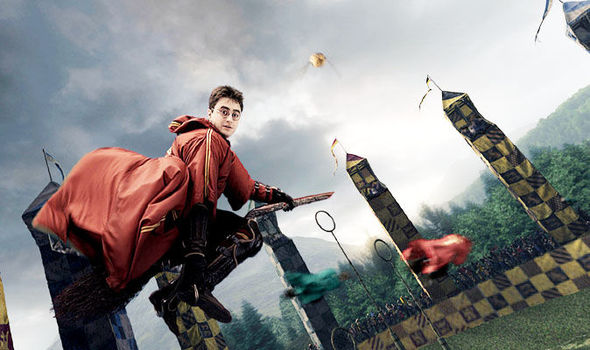
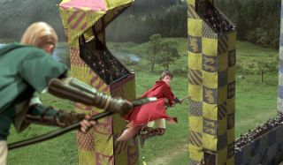
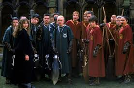
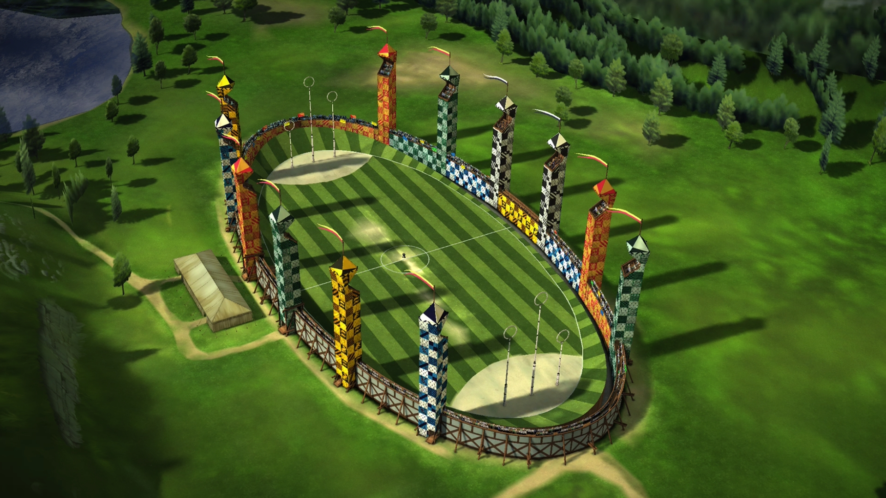

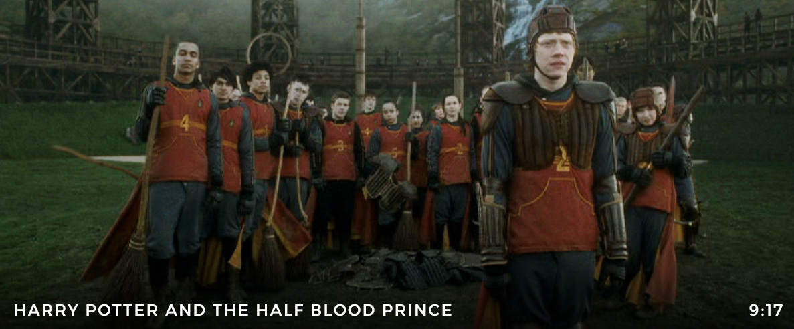
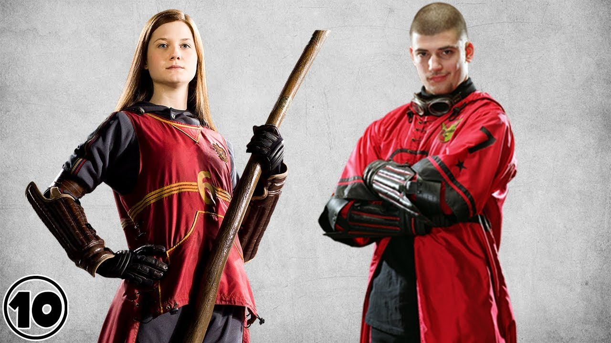
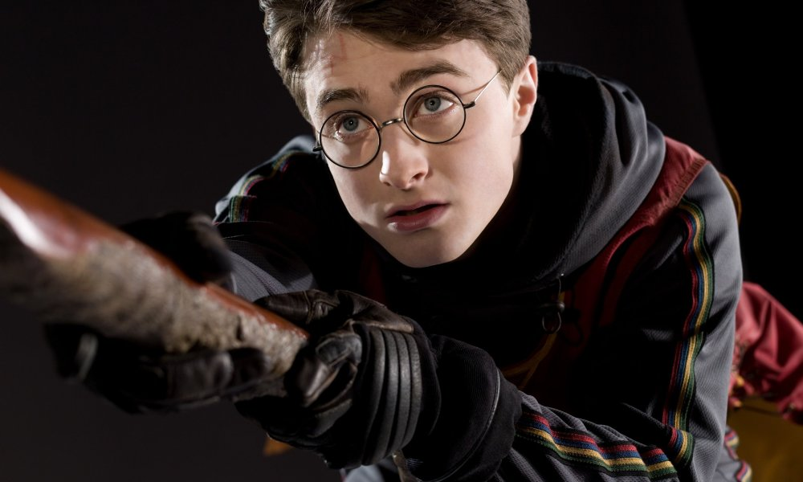
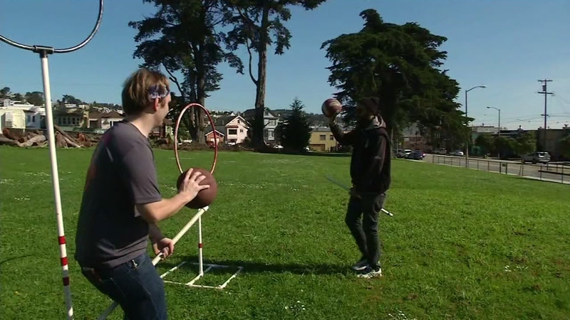
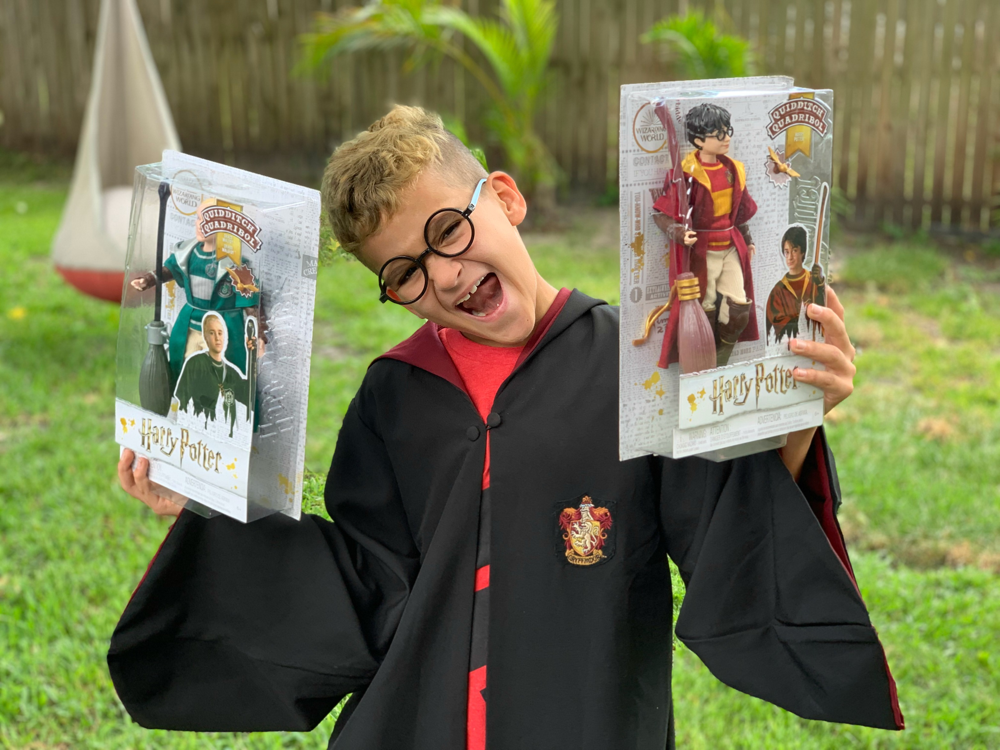
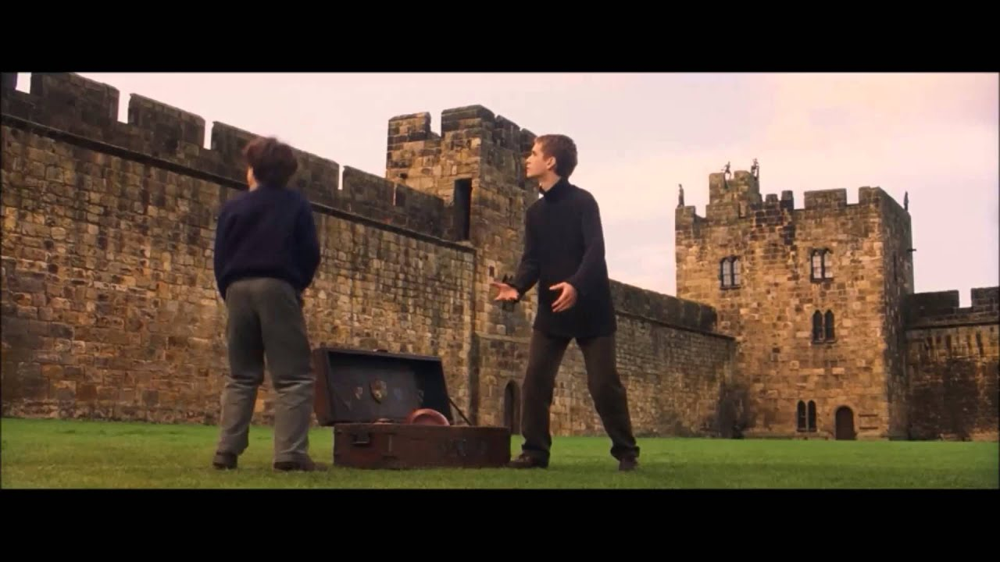
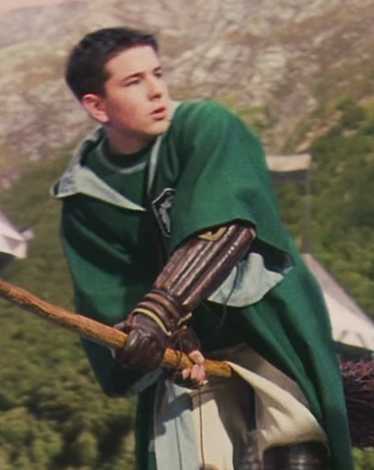
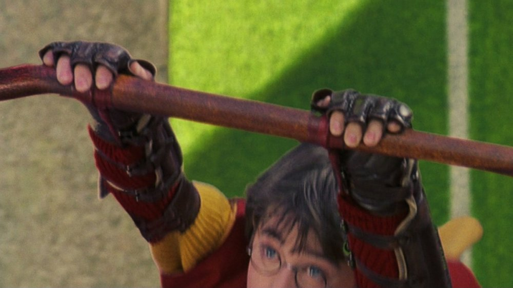
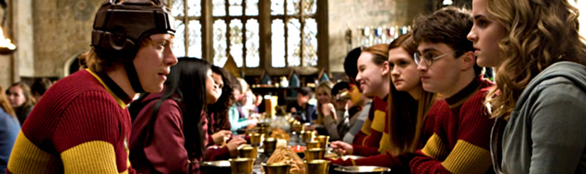
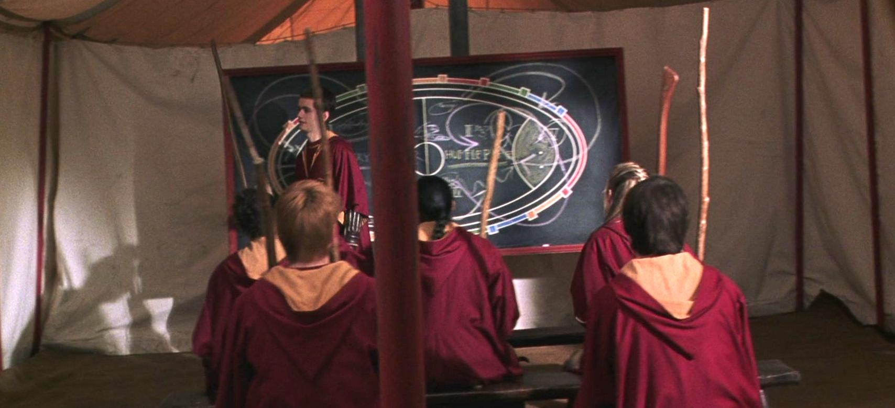
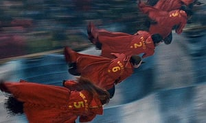
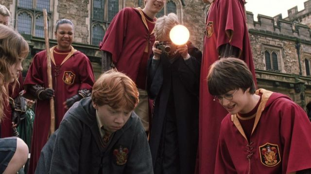
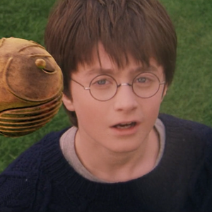
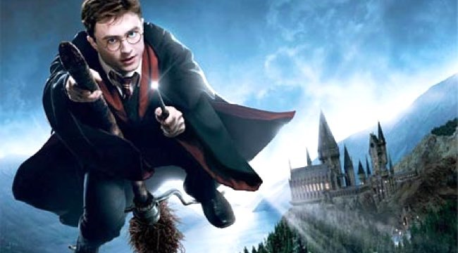
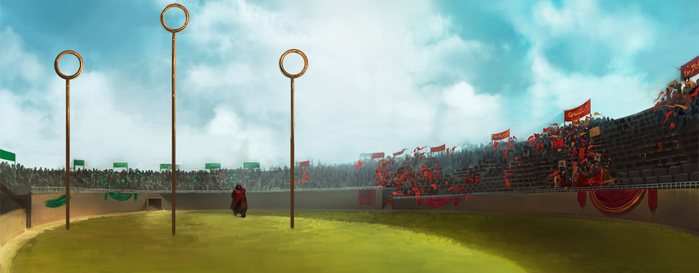